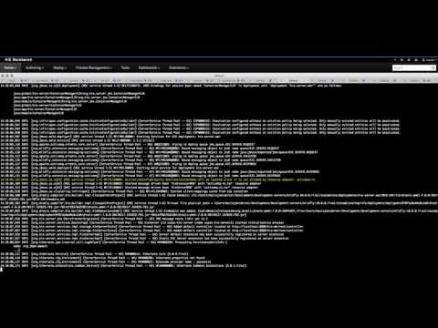
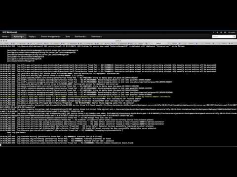

Distribute tasks wisely … pluggable task assignments jBPM7
User interaction in business processes is one of the most important aspects to make sure that the job is done. But not only that, it should make sure that the job is done:
- on time
- by proper actors
- in least time possible
- and more…
User tasks in business processes can be assigned either to:
- user(s) – individuals that are known at the time of task creation – one or more
- group(s) – groups/roles that are known at the time of task creation – one or more groups
- users or groups references as process variables
With this users are already equipped with quite few choices that allow to manage user tasks efficiently. So let’s review simple scenario:
Here is the simplest process as it can be – single user task.
Such a task can be assigned (at design time – when process is created) to:
Such a task can be assigned (at design time – when process is created) to:
- individuals via ActorId property – it supports comma separated list to specify multiple actors
- groups via GroupId property – it supports comma separated list to specify multiple groups
… use single actor
So if the task is assigned to single actor then when task is created it:
- will be assigned directly to that actor – actual owner will be that actor
- will be moved to Reserved state
- no one else will be able to work on that task anymore – as it is in reserved state
So that seems like a nice approach, but in reality it will constrain users too much because to change the actor you have to change the process definition. And in many cases there is a need for more users to be able to deal with certain tasks instead of just a single person.
… use multiple actors
To solve that you can use approach with multiple actors (as this is supported to specify set of users as comma separated list). So what will happen then?
- task will not be assigned to any individual as actual owner as there is no way to tell which one should be selected
- task will be available to all actors defined in process definition on that task
- task will be moved to Ready state
- user to be able to work on task will have to explicitly claim the task
So a bit of improvement but still relies heavily on individuals and manual claim process that can sometimes lead to inefficiency due to delays.
… use groups
naturally to go around the problem with individuals being assigned (as they come and go) better option would be to assign tasks to groups. When task is assigned to group it:
- will not be assigned to any individuals as by nature group contains many members
- will be available to all actors that belong to defined group(s) – it’s resolved on the time of the query as task is assigned to group so changes to the group do not have to be synced with tasks
- will be moved to Ready state
- user to be able to work on task will have to explicitly claim the task
so this improves situation a bit but still have some issues … manual claim and potential delays to pick tasks from the group “queue”.
… use pluggable task assignment
for this exact purpose, jBPM 7 comes with pluggable task assignment support to let you (or to be precise system) to distribute tasks according to various criteria. The criteria here are what makes the difference, as different business domains will have different ways of assigning tasks. Even different departments within the same organization will differ in that regard.
So what is the task assignment here? In general this is the logic that will be used to find the best suitable candidate to take the task automatically. To carry on with the example, there is a process that is assigned to a singe group – HR.
Task assignment strategy will then be invoked when a task is created and strategy can find the best actual owner for it. If it does such a task:
- will be assigned to selected actor
- will be moved to Reserved state
- no one else will be able to work on this task any more
but if the strategy won’t be able to find any suitable candidate (should be rather rare case but still can happen) the task will fallback to default behavior as described above.
Assignment strategy can be based on almost anything that is valuable to the business to make a fact based and efficient decision. That means some strategies can be based on:
- potential owners (as in this example)
- task data (input variables)
- task properties (name, description, project, etc)
- time when task was created
- external data not related to task itself
So that gives all the options to the users to build their own strategies based on the specific needs. But before going to the implementation (next article) let’s look at…
… what comes out of the box
jBPM 7 comes with two assignment strategies out of the box
- Potential owner busyness strategy – default
- Business rules strategy
Potential owner busyness strategy
this strategy simply makes sure that least loaded actors from potential owner list will be selected. Strategy will work on both types of potential owners – users and groups but to be able to effectively find best match it needs to resolve groups to users. Resolve is done by UserInfo configured in the environment – please make sure you have one properly configured otherwise strategy will not work in most efficient way.
Name of the strategy to be used to activate:
PotentialOwnerBusyness

Business rules strategy
This strategy promotes the use of business rules as a way of selecting actual owners. Strategy does not come with any predefined rules but instead expect to be given the KJAR coordinates of the project to be used to perform assignment. The most important factor here is that any rule can be used and it supports dynamic updates of the rules as well by making use of KIE Scanner that can incrementally update knowledge base upon new version of the KJAR being discovered.
Name of the strategy to be used to activate:
BusinessRule
Configuration parameters supported:
- org.jbpm.task.assignment.rules.releaseId
- required parameter that points the GAV of the KJAR
- org.jbpm.task.assignment.rules.scan
- optional – pool interval for the scanner in case it should be enabled – same as KIE Scanner expects it – in milliseconds
- org.jbpm.task.assignment.rules.query
- optional – drools query to be used to retrieve results – if not given all Assignment objects are taken from working memory and first is selected if not empty

… not only on task creation
task assignment is invoked not only on task creation (though that will be the most common case) but it will also get involved when:
- task is released – here the actual owner who releases the task is excluded from the assignment
- task nomination
- task reassignment (deadlines)
- task forwarding
with that it should provide quite capable self assignment behavior when the strategy is tailored for given needs.
… how to use it
Task assignment is disabled by default and can be easily enabled by specifying system property:
-Dorg.jbpm.task.assignment.enabled=true
then selecting strategy is done by another system property:
-Dorg.jbpm.task.assignment.strategy=NAME OF THE STRATEGY
if org.jbpm.task.assignment.strategy is not given PotentialOwnerBusyness strategy is used by default.
To be able to properly resolve group members users need to select user info implementation by system property:
-Dorg.jbpm.ht.userinfo=db
this one will select data base as source of group members and thus will have to be configured additionally. KIE Server comes with example configuration file in
kie-server.war/WEB-INF/classses/jbpm.user.info.properties
where db queries should be specified how to find users of given group.
Optionally you can create userinfo.properties file in the same directory and specify the group to users mapping in following format:
#groups setup
HR=hr@domain.com:en-UK:HR:[maciek,engUser,john]
PM=pm@domain.com:en-UK:PM:[maciek]
this is only for test purposes. For real environment use either data base or ldap based UserInfo implementation.
That concludes the introduction of task assignment strategies that are completely pluggable. Next article will illustrate how to implement custom strategy.

{kind=link}